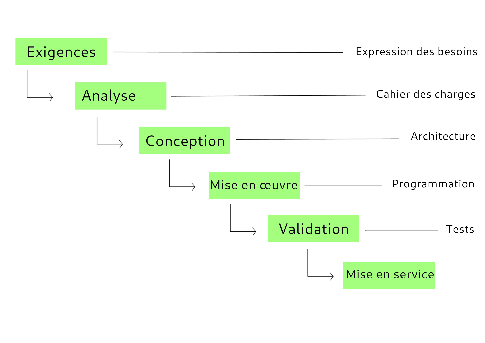
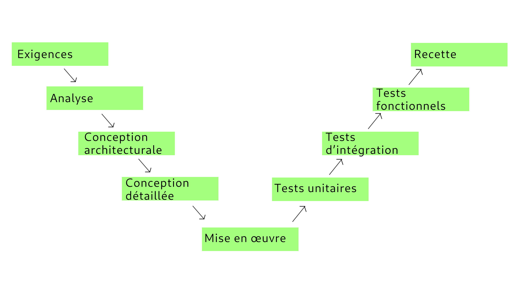
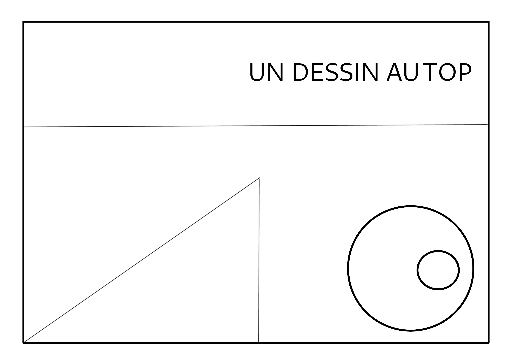
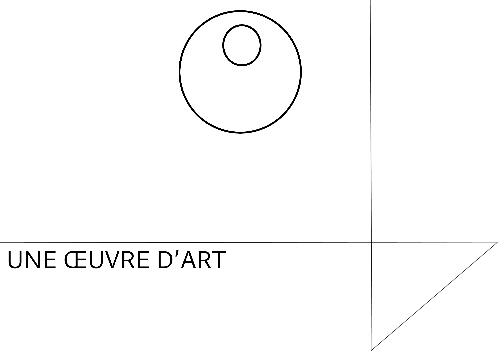
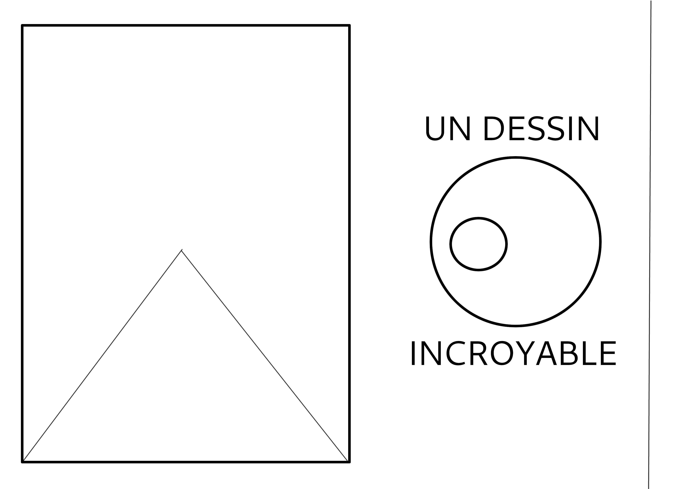
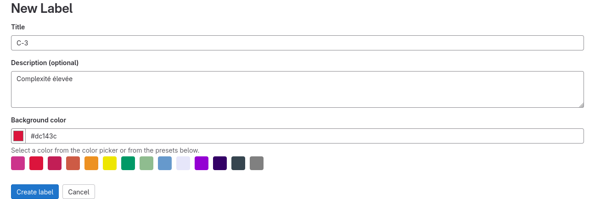
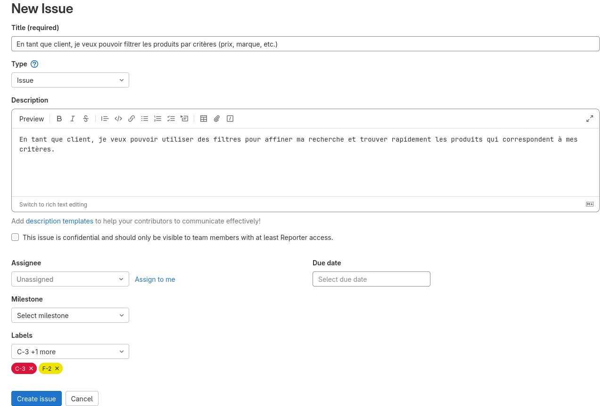
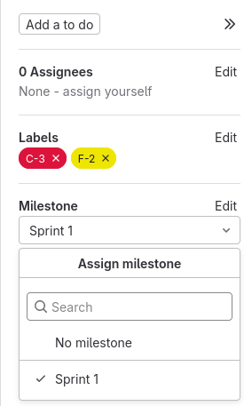
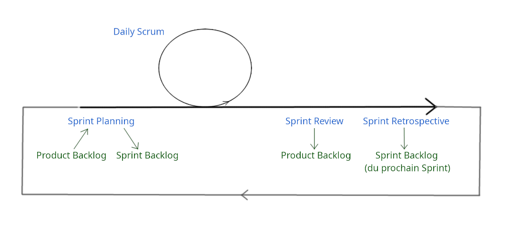
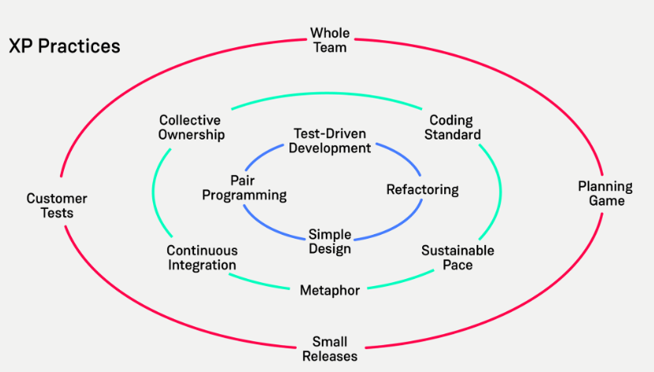

Module B2M1 — MODXXX
Piloter un projet de développement
I-manuel
B2M1 — Piloter un projet de développement
Séquence
S211 — Gestion de projet (Agile) et qualité : Planifier, Initier et conduire un projet Scrum
Vidéo de présentation du module
Réaliser un projet nécessite de travailler en équipe et avec des personnes
n’ayant pas les mêmes rôles. Afin de mener à bien cette tâche, il existe
différentes méthodes de gestion de projet qui présentent chacune des points
forts et des points faibles.
Avant de parler de Scrum, nous aborderons rapidement les limites du
modèle en cascade et du cycle en V qui sont des approches plutôt traditionnelles
et qui imposent des phases rigides.
Par la suite, nous verrons la méthode Scrum qui propose une approche itérative
et incrémentale. Ce qui permet une meilleure flexibilité, une adaptation continue
aux besoins changeants du projet et une meilleure implication des parties
prenantes tout au long du processus.
Une des clés de Scrum réside dans la construction des « stories » et le découpage
en « sprint ». Ces deux élement permettent de représenter les fonctionnalités du
produit du point de vue de l'utilisateur et de décomposer le projet en éléments
gérables.
Une autre partie importante de Scrum réside dans ses cérémonies. Nous découvrirons
ensemble les différents rituels tels que la planification de sprint,
la revue de sprint et la rétrospective, qui favorisent la communication,
la transparence et l’amélioration continue.
Enfin, nous aborderons les principes d’eXtreme Programming (XP), une pratique
complémentaire à Scrum qui met l’accent sur la partie technique, la qualité de code
et la collaboration entre les membres de l’équipe.
Quiz
Quelle est la différence principale entre la revue de sprint (Sprint Review)
et la rétrospective de sprint (Sprint Retrospective) ?
La revue de sprint se concentre sur les résultats, alors que
la rétrospective de sprint se concentre sur les processus
La revue de sprint se déroule avant le sprint, alors que
la rétrospective de sprint se déroule après le sprint
La revue de sprint est dirigée par le Scrum Master, alors que
la rétrospective de sprint est dirigée par le Product Owner
La revue de sprint se concentre sur l’équipe de développement,
alors que la rétrospective de sprint se concentre sur le Product Owner
Quel est l’objectif principal de la plannification de sprint dans Scrum ?
Définir les tâches détaillées pour chaque membre de l’équipe
Établir les objectifs à court terme pour le prochain sprint
Examiner les résultats du sprint précédent
Prioriser le Product Backlog
Quelle est la durée recommandée d’un sprint dans Scrum ?
Deux semaines
Un mois
Six semaines
Trois mois
Quel rôle Scrum est responsable de maximiser la valeur du produit et du travail de l’équipe ?
Le Scrum Master
Le Product Owner
La Scrum Team
Les actionnaires
Qu’est-ce qu’un « Product Backlog » ?
Une liste des tâches à accomplir pendant le sprint
Une liste priorisée des fonctionnalités à développer
Un résumé des rétrospectives précédentes
Une estimation du temps requis pour chaque tâche
Quelle cérémonie Scrum se concentre sur l’inspection et l’adaptation
du processus de travail de l’équipe ?
La revue de sprint (Sprint Review)
La rétrospective (Sprint Retrospective)
La plannification de sprint
Le Daily stand-up
Quel principe d’eXtreme Programming met l’accent sur la rédaction
de tests automatisés avant l’écriture de code ?
Le Pair Programming
Le Test-Driven Development
L’intégration continue
Le refactoring
Quel artefact Scrum représente la somme de toutes les tâches
terminées au cours du sprint ?
L’Increment
Le Sprint Backlog
Le Burndown Chart
Le Product Backlog
Quel aspect de Scrum adresse spécifiquement les limitations du modèle
en cascade et du cycle en V, en favorisant une approche itérative et incrémentale ?
La revue de sprint (Sprint Review)
Le Product Backlog
L’Increment
Le principe de Sprint
Quelle est la principale différence entre Scrum et le modèle en cascade ?
Scrum est itératif, alors que le modèle en cascade est linéaire
Scrum ne nécessite pas de planification
Le modèle en cascade est plus adaptatif que Scrum
Scrum ne suit pas de phases distinctes
Découverte
Comprendre les limites du modèle en cascade
Temps estimé : 1h.
Lors de cette première étape, nous allons voir un modèle d’organisation
de projet : le modèle en cascade. Nous verrons son fonctionnement et
ses limites.
Cette étape se réalise en petit groupe de 2 ou 3 personnes.
Votre entreprise développe des sites web sur mesure et utilise le modèle
en cascade pour gérer les étapes des différents projets.
Un nouveau client est signé et le projet débute. La cheffe de projet recueille
les besoins et exigences du client. Il est prévu que le développement
et la mise en production du site prenne 4 mois.
Différents problèmes surviennent lors du développement de ce site.
À vous d’identifier les causes possibles des problèmes et les
conséquences probables de leur résolution (ou non-résolution).
Identifiez les problèmes et leurs conséquences
Le développement a commencé depuis 1 mois et l’équipe est motivée.
Lors d’un rendez-vous avec le client pour un tout autre projet, il
évoque le projet actuellement en développement en disant qu’il a vraiment
hâte que ces futurs utilisateurs et utilisatrices utilisent le chatbot.
Mais aucun chatbot n’est prévu dans le développement !
La phase de conception est terminée et l’équipe de développement
commence à procéder aux tests. Différents bugs dans le code sont
constatés, que ce soit dans des parties développées récemment et
dans des parties plus anciennes.
En plus des divers bugs, tous les membres de l’équipe ne comprennent
pas de la même façon certaines exigences décrites dans le cahier
des charges. De longues discussions et relecture ont lieu.
Tous les bugs sont enfin corrigés et le site est mis en service !
Le client découvre alors le résultat et… c’est la déception
« Je n’imaginais pas ça comme ça »
Il ne comprend pas pourquoi il y a autant de pages, pourquoi
il y a un formulaire à tel endroit. Et en plus, il n’aime même pas
la charte graphique.
Comprendre les limites du cycle en V
Temps estimé : 1h.
Lors de cette étape, nous allons voir un modèle d’organisation
de projet dérivé du modèle en cascade : le cycle en V.
Nous verrons son fonctionnement et ses limites.
Cette étape se réalise en petit groupe de 2 ou 3 personnes.
Votre entreprise travaille dans le développement de solutions
logicielles dans le domaine de la santé et utilise le modèle
du cycle en V pour gérer ses projets.
Un client vous missionne pour développer un nouveau produit : une
application mobile destinée à la gestion des données de santé.
Le projet commence avec une phase de spécifications très détaillées
qui est suivi du phase de conception architecturale.
Il est prévu que le développement et la mise en service prenne
6 mois.
Différents problèmes surviennent lors du développement de cette application.
À vous d’identifier les causes possibles des problèmes et les
conséquences probables de leur résolution (ou non-résolution).
Identifiez les problèmes et leurs conséquences
Le développement se passe bien et l’équipe est très motivée.
Cela fait 3 mois que le développement a commencé.
Mais des changements très importants dans la règlementation
en matière de confidentialité des données personnelles et des
données de santé sont annoncés.
L’équipe a réussi à developper l’application, la phase de tests
unitaires commence. Des bugs sont trouvés dans du code assez récent
et du code qui date du tout début du projet.
Les tests unitaires sont tous validés. Les tests d’intégration peuvent
commencer. Certains composants de l’application ne fonctionne pas
comme prévu une fois mis en lien avec d’autres composants.
Les tests d’intégration sont complétés, les tests fonctionnels débutent.
Ouf ! Tout semble conforme au cahier des charges !
L’application est mise en production et le client la
découvre enfin. Le malaise est palpable, le client trouve l’application
trop généraliste. Il voulait une application en particulier pour
les données liées à l’ophtalmologie « Je vous l’avais pourtant dit… ».
Découvrir les principes de l’agilité
Temps estimé : 1h30.
Cette étape a pour but de découvrir les principes clés de
l’agilité en utilisant comme support de compréhension
le dessin. Ne vous inquiétez pas, il suffit de savoir dessiner
des formes simples !
Cette étape se réalise en groupe de 6 à 8 personnes.
Vous aurez besoin d’un tableau blanc collaboratif comme
WBO ou
Excalidraw.
Cette étape se compose de trois phases au cours desquelles
vous allez devoir reproduire un dessin en suivant
des spécifications.
Chaque phase dure 10 minutes. Préparez donc un minuteur.
De la même manière qu’en entreprise où des personnes
écrivent les spécifications d’un projet et d’autres personnes
réalisent le développement, votre groupe va être scindé en
deux équipes : une équipe responsable des spécifications et une
équipe responsable de la réalisation du dessin.
Vous êtes libres de composer les équipes comme vous le souhaitez.
Uniquement l’équipe des spécifications peut voir le dessin.
Le dessin se trouve dans la fiche ressource associée à chaque phase.
Lors du développement d’un projet, une grande partie de la
communication se passe par écrit. L’équipe des spécifications doit
donc transmettre ses instructions uniquement par écrit à
l’équipe réalisation.
Au sein de l’équipe des spécifications, une personne est chargée
de transmettre les spécifications à l’autre équipe.
Cette personne ne peut rien dire ou expliquer.
Elle n’a le droit que de transmettre les spécifications et
d’observer ce que l’équipe réalisation en comprend.
À la fin de chaque phase, l’équipe des spécifications pourra dévoiler
à l’équipe réalisation le dessin qu’ils devaient reproduire.
Vous échangerez alors pendant 10 minutes sur les problèmes rencontrés
et quelles stratégies vous pouvez mettre en place pour la phase
suivante.
Premier dessin, première phase
Composez les équipes spécifications et réalisation comme
vous le souhaitez. N’oubliez pas de désigner la personne
chargée de transmettre les spécifications.
Préparez un tableau collaboratif pour l’équipe réalisation.
Lancez un minuteur de 10 minutes.
L’équipe spécifications, et uniquement elle, découvre le dessin,
écrit ses spécifications et les transmet à l’équipe
réalisation.
À la fin des 10 minutes, comparez le dessin original
et le dessin produit par l’équipe réalisation.
Lancez à nouveau un minuteur de 10 minutes.
Débriefez comment la réalisation c’est passé et identifiez les
problèmes rencontrés (clarté des spécifications, temps de
transmission…).
Pour chaque problème, essayez de trouver une solution que
vous pourrez mettre en place lors de la prochaine phase.
Le minuteur est fini, le débrief est terminé. Passez à la
phase d’après.
Deuxième dessin, deuxième phase
Composez les équipes spécifications et réalisation comme
vous le souhaitez. N’oubliez pas de désigner la personne
chargée de transmettre les spécifications.
Préparez un nouveau tableau collaboratif pour l’équipe réalisation.
Lancez un minuteur de 10 minutes.
L’équipe spécifications, et uniquement elle, découvre le dessin,
écrit ses spécifications et les transmet à l’équipe
réalisation.
À la fin des 10 minutes, comparez le dessin original
et le dessin produit par l’équipe réalisation.
Lancez à nouveau un minuteur de 10 minutes.
Débriefez comment la réalisation c’est passé et identifiez les
problèmes rencontrés (clarté des spécifications, temps de
transmission…).
Pour chaque problème, essayez de trouver une solution que
vous pourrez mettre en place lors de la prochaine phase.
Le minuteur est fini, le débrief est terminé. Passez à la
phase d’après.
Troisième dessin, troisième et dernière phase
Composez les équipes spécifications et réalisation comme
vous le souhaitez. N’oubliez pas de désigner la personne
chargée de transmettre les spécifications.
Préparez un nouveau tableau collaboratif pour l’équipe réalisation.
Lancez un minuteur de 10 minutes.
L’équipe spécifications, et uniquement elle, découvre le dessin,
écrit ses spécifications et les transmet à l’équipe
réalisation.
À la fin des 10 minutes, comparez le dessin original
et le dessin produit par l’équipe réalisation.
Lancez à nouveau un minuteur de 10 minutes.
Débriefez comment la réalisation c’est passé et identifiez les
problèmes rencontrés (clarté des spécifications, temps de
transmission…).
Pour chaque problème, essayez de trouver une solution que
vous pourrez mettre en place lors de la prochaine phase.
Le minuteur est fini, le débrief est terminé. Passez à la
phase d’après.
Débrief général
Au fil des phases, quels problèmes avez-vous rencontrés ?
Quelles étaient les stratégies les plus efficaces ?
Quelles étaient les stratégies les moins efficaces ?
Créer des stories
Temps estimé : 1h30.
Au début d’un projet, la première chose à faire et de
recueillir les besoins du client. Dans les méthodes comme le
modèle en cascade ou le cycle, le cahier des charges sert de référentiel.
Dans les méthodes dîtes Agile, les besoins du client vont
être représentés sous forme de « story ».
Cette étape se déroule en groupe de 4 à 6 personnes.
Vous travaillez dans une entreprise qui conçoit et
vend des solutions de distribution sur mesure.
Un client vient vous voir car il souhaite installer
dans son établissement une solution pour permettre à
ses propres clients de récupérer des commandes en autonomie.
Identifiez et formalisez les stories
Réfléchissez aux fonctionnalités attendues par le client.
Attention à bien vous placer du point de vue du client
quand vous évaluez l’utilité d’une fonctionnalité.
De quoi le client a vraiment besoin pour que le distributeur
réponde à son besoin et à celui de ses utilisateurs et
utilisatrices ?
Une fois que vous avez une liste de fonctionnalité,
sélectionnez en 5 ou 6 principales pour la question d’après.
Pour chaque fonctionnalité, créez la story associée en
respectant les critères de validité d’une story.
Valuer les stories
Temps estimé : 1h30.
Une fois les différentes stories créées, il va falloir leur
attribuer une valeur.
Une story peut avoir différentes valeurs suivant ce que
l’on cherche à valuer.
On va pouvoir valuer les stories pour obtenir un ordre
de priorité et également pour obtenir un niveau de
difficulté pour chaque story.
Cette étape se déroule en groupe de 4 ou 6 personnes.
Si possible le même que pour l’étape précédente.
Vous travaillez toujours dans l’entreprise de conception de
solutions de distribution sur mesure de l’étape précédente et
vous êtes toujours sur le même projet.
Lors de l’étape précédente vous avez établi différentes stories
pour représenter le besoin du client.
Les stories étant claires et définies, il est nécessaire de les
valuer afin d’établir un ordre de priorité des fonctionnalités
à réaliser.
Valuez chacune des stories
Reprenez les 5 ou 6 stories finales de l’étape précédente.
Au sein du groupe, désignez un facilitateur.
Le facilitateur a pour rôle de faciliter les débats en
s’assurant que tout le monde puisse exprimer son avis.
En choisissant une des méthodes de valuation proposées
dans la fiche ressource associée, valuez chacune des stories.
Il peut être compliqué de se mettre d’accord. Pour l’exercice,
il est conseillé de se limiter à 3 tours de votes / débats.
Une fois les stories valuées, débriefez de cette étape.
Quelles difficultés avez-vous rencontrées ? Comment mettre en
place des discussions où tout le monde peut donner son
opinion ?
Commencer un sprint
Temps estimé : 2h30.
La philosophie Agile repose sur le principe d’itérations et
de stories. Pour appliquer le principe d’itérations,
la méthode Scrum utilise les « sprint ».
Le but de cette étape est de se familiariser avec le
vocabulaire de la méthode Scrum et d’initialiser
un sprint.
Cette étape se déroule en groupe de 3.
Vous travaillez dans une entreprise de développement de
site web. Un client a contacté votre entreprise car il
souhaite avoir un site de vente en ligne de matériel
de cuisine.
Les besoins du client ont été identifiés. Les stories
relatives au projet ont déjà été rédigées et valuées.
Chaque story a deux valeurs : une fonctionnelle et une
de complexité. La valeur fonctionnelle est F-1 (importance
faible), F-2 (importance moyenne) ou F-3 (importance élevée).
La valeur de complexité est C-1 (complexité faible),
C-2 (complexité moyenne) ou C-3 (complexité élevée).
Votre équipe se compose d’un Product Owner et de deux
développeuses ou développeurs.
Votre équipe travaille à temps plein sur ce projet. La durée
choisie pour le sprint est de deux semaines.
Votre objectif va être d’initialiser un premier
sprint pour ce projet.
Utilisez un outil pour gérer les stories
Choisissez une des personnes du groupe pour jouer le
rôle du Product Owner et deux personnes pour
jouer l’équipe de développement.
Créez le projet dans l’outil de votre choix, ainsi que les
différents labels (si nécessaire).
Créez les stories dans le logiciel afin de
constituer le « Product Backlog » du projet.
Vous pouvez trouver les différentes stories dans la fiche
de ressources associée.
Vérifiez que vous avez bien indiqué également les
valuations de chaque story.
Initialisez le sprint. Il s’agit de préparer l’endroit
qui contiendra le « Sprint Backlog ».
Réalisez un « Sprint Planning »
Définissez l’objectif de ce premier sprint.
Sélectionnez les stories qui doivent être réalisées
durant ce premier sprint.
N’oubliez pas la durée du sprint et la taille de
votre équipe.
Constituez le « Sprint Backlog ».
Clotûrer un sprint
Temps estimé : 2h.
À la fin d’un sprint, deux réunions différentes se tiennent
afin de le clôturer.
Le but de cette étape est de clôturer le sprint de l’étape
précédente.
Cette étape se déroule en groupe de 3. Si possible le même que
pour l’étape précédente.
Vous travaillez toujours dans l’entreprise de développement de site
web de l’étape précédente.
Le sprint que vous aviez défini arrive à son terme. C’est le moment
de le clôturer.
Durant ce sprint, une des personnes de l’équipe de développement
a été absente pendant 4 jours. Et certaines stories étaient
plus complexes que prévu.
Parmi les différentes stories prévues lors du sprint,
seulement les deux les plus difficiles ont pu être réalisées.
Réalisez un Sprint Review
Choisissez une des personnes du groupe pour jouer le
rôle du Product Owner et deux personnes pour
jouer l’équipe de développement.
Le client n’étant pas disponible pour cette réunion, mais
il a fait parvenir au Product Owner sa volonté de rajouter
une nouvelle fonctionnalité au site.
Il veut que les clients puissent définir des adresses de livraison
préférées.
Est-il possible de rajouter une fonctionnalité
maintenant ? Si oui, que faut-il faire ?
Réalisez une Sprint Retrospective
Quels sont les points positifs du sprint ?
Quels sont les points négatifs du sprint ?
Qu’est ce qui peut être mis en place pour éviter que
les points négatifs soulevés se reproduisent ?
Rédigez un compte-rendu succint de la réunion résumant
les points positifs, les points négatifs et les décisions
prises pour la suite.
Vous pouvez fermer le sprint sur l’outil de gestion
de projet !
Mettre de l’agilité dans ses pratiques de code
Temps estimé : 1h.
La méthode Scrum permet de gérer de façon Agile un projet.
Mais elle se concentre surtout sur les interactions entre
les personnes et délaisse le côté technique du développement.
Pour pallier cela, Scrum est souvent utilisé en combinaison
avec des méthodes Agile de développement comme eXtreme Programming.
Cette étape se déroule en groupe de 2.
Votre entreprise vous missionne pour amener des nouvelles
bonnes pratiques de développement afin d’améliorer la
qualité des applications.
Vous décidez de faire quelques recherches sur eXtreme
Programming et d’appliquer ses principes sur un
développement de test relativement simple : le FizzBuzz.
Votre programme prend en entrée un nombre. Si ce
nombre est un multiple de 3, il doit renvoyer "Fizz".
Si le nombre est un mulitple de 5, il doit renvoyer "Buzz".
Si le nombre est un multiple de 15, il doit
renvoyer "FizzBuzz".
Appliquez les principes d’eXtreme Programming
Choisissez le langage de programmation avec lequel
vous souhaitez développer votre programme.
Écrivez un premier test qui permet de vérifier que
si le nombre saisi est un multiple de 3, votre programme
renvoie bien "Fizz".
Attention, à ce stade là, vous n’avez rien écrit d’autre
que ce test.
Écrivez ensuite le code minimal permettant de faire
passer ce test.
Écrivez d’autres tests, puis le code minimal pour
faire passer chacun d’eux.
Votre code vous semble-t-il clair ? Les variables ont-elles
toutes un nom représentatif ? Les fonctions sont-elles
nommées correctement ? Si non, refactorez votre code.
Si vous n’aviez pas de tests, seriez-vous à l’aise
pour faire des modifications dans votre code ?
Atelier
Fiches ressources
Comment fonctionne le modèle en cascade ?
Le modèle en cascade est une organisation de projet qui consiste en
une suite de phases dont chacune va dépendre du résultat de la précedente.
On passe d’une phase à une autre uniquement lorsque le résultat de la première
est validé.
Ce modèle provient surtout du domaine de la construction et fait
son apparition dans le domaine de l’informatique dans les
années 1950.
La première utilisation du terme « cascade » a lieu en 1970.
Modèle en cascade classique

On retrouve 6 phases dans le modèle en cascade :
Exigences : les besoins et exigences du client sont recueillis
Analyse : un cahier des charges fonctionnel est rédigé à partir des exigences du client
Conception : l’architecture de la solution qui va être développée est déterminée
Mise en œuvre : la solution est développée
Validation : la solution est testée et le respect du cahier des charges est vérifié
Mise en service : la solution est mise en production et accessible au client
Cette méthode permet de mettre l’accent sur l’existance d’une documention structurée.
Des évolutions de ce modèle existe, comme par exemple le cycle en V.
Comment fonctionne le cycle en V ?
Le cycle en V est une évolution du modèle en cascade qui a pour but de
mettre l’accent sur la validation. C’est un modèle qui peut être plus
adapté pour les systèmes avec de nombreux composants.
Le cycle en V est composé d’une phase descendante similaire
au modèle en cascade, et d’une phase ascendante qui permet de valider
chaque étape de la phase descendante.
Cycle en V classique

Lors de la phase descendante, on retrouve à peu près les mêmes étapes
que dans le modèle en cascade :
Exigences : les besoins et exigences du client sont recueillis
Analyse : un cahier des charges fonctionnel est rédigé à partir des exigences du client
Conception architecturale : l’architecture de la solution qui va être développée est déterminée
Conception détaillée : chaque composant nécessaire est défini
Mise en œuvre : chaque composant est développé
Cette phase descendante est suivie d’une phase ascendante qui
permet de valider chaque étape de la phase descendante :
Tests unitaires : chaque composant est testé et validé par rapport à sa conception détaillé
Tests d’intégration : tous les composants sont assemblés et le système est testé et validé par rapport à sa conception architecturale
Tests fonctionnels : la solution est testée et validée par rapport au cahier des charges
Recette : la solution est mise en production et accessible au client
Étant issu du modèle en cascade, le cycle en V présente les mêmes défauts liés
à sa rigidité.
Que ce soit le cycle en V ou le modèle en cascade, il n’est pas rare
que des étapes supplémentaires en amont soient ajoutées, comme la
réalisation d’un prototype.
Premier dessin
Dessin à spécifier

Deuxième dessin
Dessin à spécifier

Troisième dessin
Dessin à spécifier

Comment construire une story ?
Les stories correspondent plus ou moins au découpage d’un projet
en fonctionnalités.
Ces stories seront par la suite réalisées au cours phases itératives,
les itérations (appelées « sprint » dans la méthode Scrum).
Afin de pouvoir être utile et utilisable, une story doit
suivre les principes de l’INVEST.
Independant
Il est important que les stories soient indépendantes les unes des autres,
au minimum dans l’itération en cours.
Une story doit pouvoir être réalisée toute seule sans
attendre la fin d’une tierce story.
Par exemple, si l’on développe une application où les
personnes pourront s’identifier, il y aura une story pour réaliser
la connexion au compte et une story pour réaliser la création
de compte.
On pourrait penser que pour implémenter la fonctionnalité
de connexion, il faut forcément que la fonctionnalité
de création de compte existe déjà.
Cependant, ces deux stories peuvent être
réalisées indépendamment l’une de l’autre car il est possible
de simuler l’existance d’un compte pour vérifier si la
connexion est fonctionnelle.
Negociable
Les stories ne doivent pas comporter trop de détails.
Pour décrire une story, il est mieux d’utiliser une phrase
simple qui décrit la fonctionnalité dans son ensemble.
Par exemple : un rapport quotidien est généré.
Cela permet de laisser la story évoluer avec les discussions
avec le client ou d’autres parties prenantes. Aussi, l’équipe
de développement est libre de définir « comment » la story va
être réalisée.
Valuable
Il est important qu’une story est une valeur commerciale,
qu’elle réponde à un besoin du client.
Les stories ne sont pas une liste de fonctionnalités d’un point
de vue technique, mais bien d’un point de fonctionnel.
On sait quelle valeur la story apporte pour les personnes
qui vont utiliser le produit.
Ainsi une story qui a pour but de réduire la dette technique
ou de simplifier le code n’est pas une bonne story.
En effet, ces deux buts ont clairement un intérêt pour l’équipe
de développement, mais ils n’apportent rien pour le
client en terme de fonctionnalité.
Estimable
Les stories doivent également être concrètes.
L’équipe de développement doit être capable d’estimer le temps
de réalisation des différentes stories et de savoir
quelles stories sont de même complexité.
Dans certaines équipes, les stories ne sont pas réellement estimées.
Auquel cas, le critère d’estimable devient synonyme de : toutes
questions liées à la story sont résolues, la story est prête
à être développée.
Small
Chaque story doit pouvoir être réalisée au cours d’une
seule itération et par une ou deux personnes.
Il est important de faire attention à la taille des stories.
En effet, plus une story est grande et complexe, il est
plus difficile de la mener à bien. Ce qui peut baisser
la motivation de l’équipe de développement.
Testable
Enfin, il est nécessaire que l’on puisse définir quand
une story est complète.
Pour cela, on définit des critères d’acceptation qui sont
clairs et validés par le métier.
Ces critères d’acceptation permettent de s’assurer que la
réalisation de la story correspond bien au besoin.
Aussi, les ressources de test doivent être disponibles
afin de s’assurer que les tests soient faisables.
Rédiger une story
Pour formaliser une story, on cherche à répondre à trois questions :
Qui est la cible de cette story ?
Quel est le but de la personne ciblée ?
Pourquoi ?
Une story peut alors être :
« En tant que comptable, je souhaite générer un
rapport mensuel des factures afin de suivre l’évolution
des commandes et d’identifier d’éventuels problèmes. »
Comment valuer des stories ?
Afin de valuer des stories, une réunion est prévue entre
les différentes parties prenantes. Si l’on value l’importance
fonctionnelles des stories, le client (ou son représentant)
est présent. Si l’on value la complexité technique,
seule l’équipe de développement est généralement présente.
Peu importe le critère valué, la valuation va se passer
suivant le même schéma.
Une méthode de valuation est choisie par la personne facilitatrice,
et s’en suit une suite de votes et de débats.
Il existe différentes méthodes pour valuer les stories
qui sont toutes dérivées du Wideband Delphi.
L’idée est d’avoir une liste de valeurs qui représentent
une importance ou une complexité croissante.
Ça peut être les valeurs de cartes de jeu, auquel cas la
méthode va s’appeler « Planning Poker » (le terme peut se
trouver même quand ce ne sont pas des valeurs de cartes).
Ça peut être les valeurs de tailles de t-shirt, d’un
nombre de doigts (la méthode s’appelle alors « Flying Finger »)…
Pour chaque story :
La personne qui facilite présente la story.
Toutes les personnes (à l’exception du facilitateur)
indiquent en même temps la valeur qu’elles estiment.
Si tout le monde est d’accord, la valeur est attribuée
à la story. Sinon, les personnes expliquent qu’est
ce qui a motivé leur choix.
Lors des échanges, la personne qui facilite s’assure
que les discussions restent cordiales, que le
temps d’échange ne dure pas trop longtemps et que
tout le monde puisse s’exprimer.
Lorsque tout le monde a expliqué son choix, un nouveau
vote est fait. Un nouvel échange a lieu si tout le
monde n’est pas d’accord.
Et ainsi de suite jusqu’à ce que toutes les stories
soient valuées.
Les outils pour gérer les projets en mode Agile
De nombreux outils permettant de gérer les projets
en mode Agile existent.
Ils permettent de gérer les stories, en général sous forme
de tickets, de leur attribuer des labels ou des tags, de
les affecter à une personne, de les associer à un sprint,
de les visualiser sous forme de tableau…
Tous ces outils disposent d’une version gratuite avec certaines
limites (mais suffisante pour ce cours) et de version
payantes avec plus de fonctionnalités.
D’autres outils plus "rudimentaires" peuvent être aussi utilisés,
comme par exemple un tableau de Post-its ou un tableur.
Utiliser GitLab et GitLab Board
Les étapes et vocabulaire sont similaires peu importe l’outil choisi.
Après vous être créé un compte sur GitLab (si besoin), vous pouvez
créer un nouveau projet vierge.
Afin de pouvoir labéliser les stories, il faut que des labels
existent. Pour cela, allez dans Manage / Labels et
créez les différents labels nécessaires.
Création d’un label dans un projet GitLab

GitLab fonctionne avec le principe de tickets. Pour créer les
stories, rendez-vous sur l’onglet Issues. pour
chaque story, vous pouvez créer le ticket correspondant et
lui attribuer les différents labels pour représenter les
valuations.
Création d’un ticket dans un projet GitLab

Vous pourrez ensuite créer une milestone correspondant à un sprint,
ce qui permet de regrouper les stories du sprint ensemble.
Pour créer une milestone, allez dans Plan / Milestones.
Au fur et à mesure du « Sprint Planning », vous pouvez lier
les stories à la milestone en allant sur le ticket concerné
et en lui atttribuant la milestone.
Assignation d’un ticket à une milestone

Au cours du sprint, les différents tickets seront assignés
à des personnes et passés en statut « En cours ».
L’avancée du sprint est alors visible depuis la page de la
milestone : Plan / Milestones / Nom du sprint.
Une vision globale sur tous les tickets du projet et aussi
accessible dans Issue boards.
Les stories du site de vente en ligne
En tant que visiteur, je veux pouvoir voir les différents produits,
C-2, F-3:
En tant que visiteur, je veux pouvoir accéder facilement aux différentes catégories
de produits depuis la page d'accueil.
En tant que client, je veux pouvoir créer un compte utilisateur,
C-1, F-3:
En tant que client, je veux pouvoir m'inscrire sur le site en fournissant
mon nom, mon adresse e-mail, et un mot de passe.
En tant que client, je veux pouvoir ajouter des produits à mon panier d'achat ,
C-2, F-3:
En tant que client, je veux pouvoir ajouter des produits à mon panier
depuis la page de détail du produit.
En tant que client, je veux pouvoir passer une commande,
C-3, F-3:
En tant que client, je veux pouvoir finaliser ma commande en fournissant
les détails d'expédition et en choisissant une méthode de paiement.
En tant que client, je veux pouvoir suivre l'état de ma commande,
C-1, F-2:
En tant que client, je veux pouvoir consulter l'état de ma commande
à tout moment après l'achat.
En tant qu'administrateur, je veux pouvoir gérer les produits,
C-2, F-3:
En tant qu'administrateur, je veux pouvoir ajouter, modifier, ou
supprimer des produits depuis le panneau d'administration.
En tant que client, je veux pouvoir laisser des avis sur les produits,
C-1, F-1:
En tant que client, je veux pouvoir laisser des avis et évaluations
sur les produits que j'ai achetés.
En tant qu'administrateur, je veux pouvoir gérer les commandes,
C-2, F-2:
En tant qu'administrateur, je veux pouvoir consulter toutes les
commandes, les marquer comme expédiées, ou annuler des commandes si nécessaire.
En tant que client, je veux pouvoir utiliser un code de réduction,
C-1, F-1:
En tant que client, je veux pouvoir appliquer un code de réduction
lors de la validation de ma commande.
En tant que client, je veux recevoir des notifications par e-mail,
C-1, F-1:
En tant que client, je veux recevoir des e-mails de confirmation de
commande, de suivi d'expédition, et d'offres spéciales.
En tant que client, je veux pouvoir sauvegarder des produits dans ma liste de souhaits,
C-2, F-1:
En tant que client, je veux pouvoir ajouter des produits à ma liste
de souhaits pour un achat ultérieur.
En tant que client, je veux pouvoir filtrer les produits par critères (prix, marque, etc.) ,
C-3, F-2:
En tant que client, je veux pouvoir utiliser des filtres pour affiner
ma recherche et trouver rapidement les produits qui correspondent à mes critères.
Vocabulaire Scrum
Scrum est un framework, ou méthode, dît Agile. C’est à dire
qu’il suit et implémente les principes et valeurs définis
dans le Manifeste Agile.
La méthode Scrum est définie par le Scrum Guide et utilise
une terminologie propre pour
désigner les différentes parties prenantes d’un projet,
les différents évènements ainsi que les différents artéfacts.
L’équipe Scrum
L’équipe Scrum est composée de trois rôles distincts : le Scrum Master,
le Product Owner, les développeuses et développeurs.
La personne Scrum Master a pour missions de :
aide l’entreprise à mettre en place Scrum
aide la personne Product Owner dans ses tâches
accompagne l’équipe Scrum dans la gestion des évènements Scrum
ne prend aucune décision sur le projet.
La personne Product Owner a pour missions de :
maximiser le travail de l’équipe Scrum
de gérer le Product Backlog.
Le Product Owner peut déléguer ses tâches, mais il en reste responsable.
Les développeuses et développeurs ont pour missions de :
accomplissent les tâches nécessaires au sprint
créer un plan de sprint et le Sprint Backlog
promouvoir la qualité
définir et veiller au respect de la Definition of Done
Les évènements Scrum
La méthode Scrum met en place cinq évènements différents :
le sprint, le sprint planning, le daily Scrum, le sprint review
et la sprint retrospective.
Le sprint correspond à une itération d’une durée fixe
et a un objectif bien précis qui ne peut changer (c’est l’objectif
de sprint). Il est possible d’affiner le Product Backlog durant
un sprint.
Un sprint dure généralement entre 2 et 4 semaines.
Le premier évènement qui débute un sprint est le Sprint Plannig.
Le Sprint Planning permet de :
plannifier le prochain sprint
définir le pourquoi, le quoi et le comment du sprint
définir le Sprint Backlog.
Toute l’équipe Scrum prend par à cet évènement. Il peut durer
au maximun 8 heures.
Au cours d’un sprint, un évènement régulier a lieu : le
Daily Scrum.
C’est un évènement quotidien qui ne concerne que les développeuses
et développeurs et qui permet aux personnes de dire ce qu’elles
ont fait, ce qu’elles vont faire et ce qui les bloque.
C’est un évènement court qui ne dure que 15 minutes.
À la fin d’un sprint, une Sprint Review va se tenir.
Toute l’équipe Scrum est présente et montre le travail effectué
au cours du sprint aux différentes parties prenantes (dont le
client). Des décisions peuvent être prises au cours de cette
réunion pour modifier le Product Backlog.
Cet évènement dure au maximum 4 heures.
Enfin, pour clôture le sprint, une Sprint Retrospective
a lieu.
Cet évènement ne concerne que l’équipe Scrum. Durant cette réunion,
les membres de l’équipe regarde ce qui a bien fonctionné et
ce qui a mal fonctionné durant le sprint.
Cette réunion pemet de chercher des axes d’améliorations et
certains peuvent être mis dans le Sprint Backlog du
prochain sprint.
Cet évènement dure au maximum 3 heures.
Les artéfacts Scrum
Différents artéfacts sont utilisés dans la méthode Scrum
pour suivre l’avancée d’un projet : le product backlog,
le sprint backlog et l’increment.
Le Product Backlog est une liste ordonnée
des choses à faire pour améliorer le produit. Il contient tout
ce qu’il est nécessaire de faire pour atteindre l’objectif
de produit.
C’est grosso-modo la liste de toutes les stories, ordonnées
par importance fonctionnelle.
Le Product Backlog est sous la responsabilité du Product Owner.
Le Sprint Backlog est quant à lui la liste
de toutes les choses à réaliser pour un sprint.
Il contient la définition de l’objectif de sprint, ainsi que
le pourquoi, quoi et comment du sprint.
Enfin, on a l’Increment. Il représente une
étape vers l’objectif de produit.
L’Increment est le résultat d’un sprint et est composé de la
somme des Increments de chaque sprint passé.
Un résumé de Scrum en schéma

Comment fonctionne eXtreme Programming ?
eXtreme Programming est une méthode dîte Agile de développement.
Elle suit donc également les principes et valeurs du Manifeste Agile.
Elle met l’accent sur l’excellence et la qualité technique et
définit aussi des concepts permettant amener de la qualité
dans le projet aussi d’un point de vue humain.
Le cercle de la vie d’eXtreme Programming
Le cercle de la vie permet de représenter les différentes
parties prenantes d’un projet et leurs interactions.
Le cercle de la vie

Le cercle extérieur représente comment le prestataire communique avec le client.
On retrouve les concepts de :
Planning Game : découpage du projet en fonctionnalité, priorisation,
plannification…
Small Releases : le projet avance petit à petit
Customer Tests : chaque feature peut être concrêtement finie
Whole Team : tout le monde participe.
Le cercle du milieu représente le fonctionnement à l’échelle d’une équipe.
On retrouve les concepts de :
Coding Standard : l’équipe partage des conventions de code
Sustainable Pace : l’équipe est maintenue dans un bon état
Collective Ownership : la connaissance sur le projet est partagée
Continuous Integration : l’équipe peut avoir des retours rapides
Metaphor : un vocabulaire est mis en place pour communiquer avec le client
Le cercle interne représente les pratiques à l’échelle des développeuses
et développeurs.
Les pratiques de développement
eXtreme Programming amène 4 pratiques pour améliorer la
qualité de développement et amener une certaine agilité d’un
point de vue technique : le TDD, le refactoring, le Simple Design et
le Pair Programming.
Le TDD (Test Driven Development) peut être décrit en
suivant ces trois règles :
Ne pas écrire de code tant qu’un test correspondant n’a pas été écrit
Ne pas écrire plus qu’il n’en faut pour avoir un test qui échoue
Ne pas écrire plus de code que nécessaire pour faire passer le test correspondant
Écrivant des tests avant d’écrire le code d’une fonctionnalité permet
de définir clairement le fonctionnement attendu.
Aussi, cela permet d’être plus serein au moment de faire des
modifications dans le code car en exécutant les tests, on pourra
immédiatement se rendre compte si quelque chose qui fonctionnait
est cassé.
Le Refactoring consiste à améliorer le
code, le rendre plus clair et plus facilement
maintenable, sans casser son fonctionnement.
Cette pratique s’applique bien lorsque du TDD est en place !
Le Simple Design est quant à lui un des buts
du refactoring.
En effet, le Simple Design cherche à simplifier le code afin
d’obtenir une structure plus simple, plus petite et
plus compréhensible.
Enfin, le Pair Programming est le fait de travailler
à deux sur un même code.
Le Pair Programming permet de partager facilement la
connaissance technique sur un projet mais aussi d’amener
différents points de vue sur un même problème.
Ainsi, le code produit est de meilleure qualité.